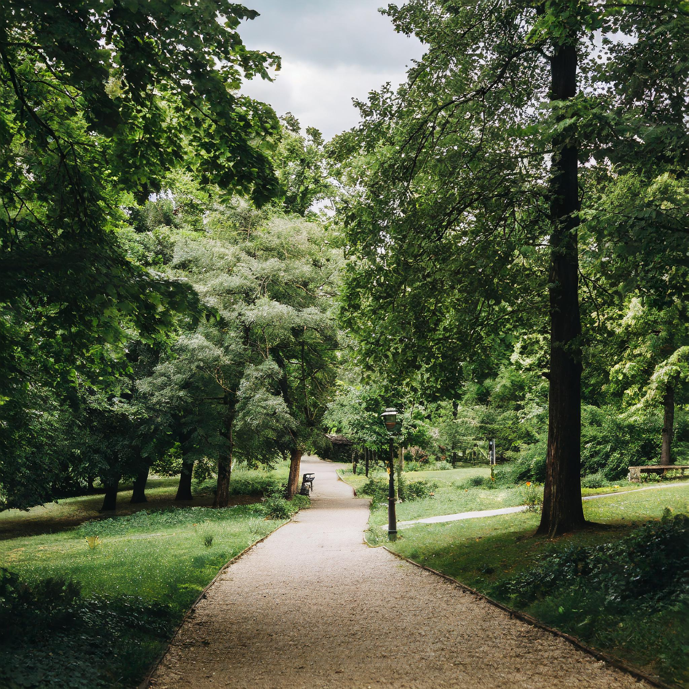
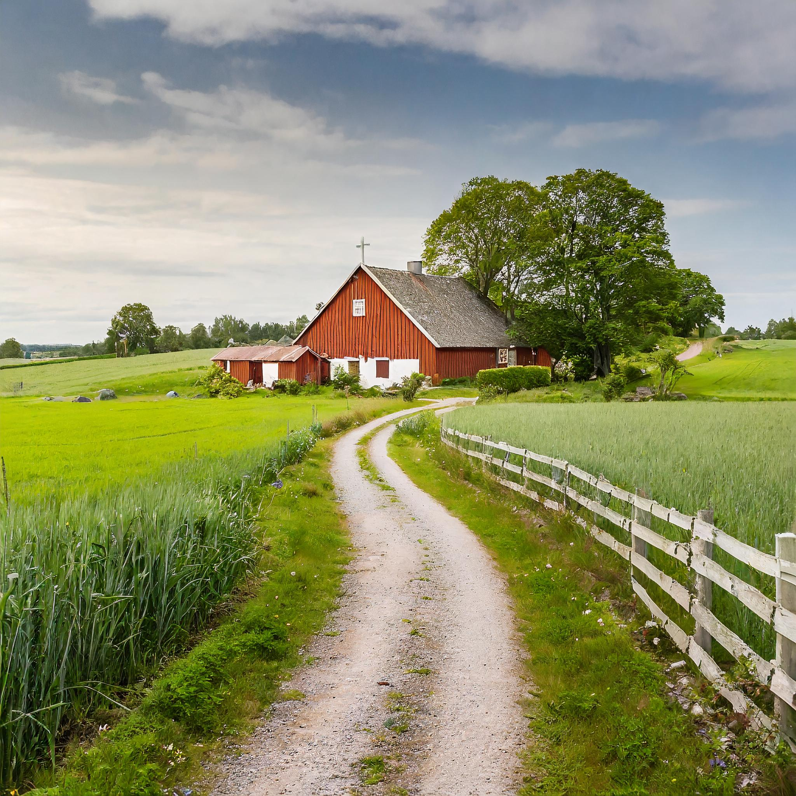
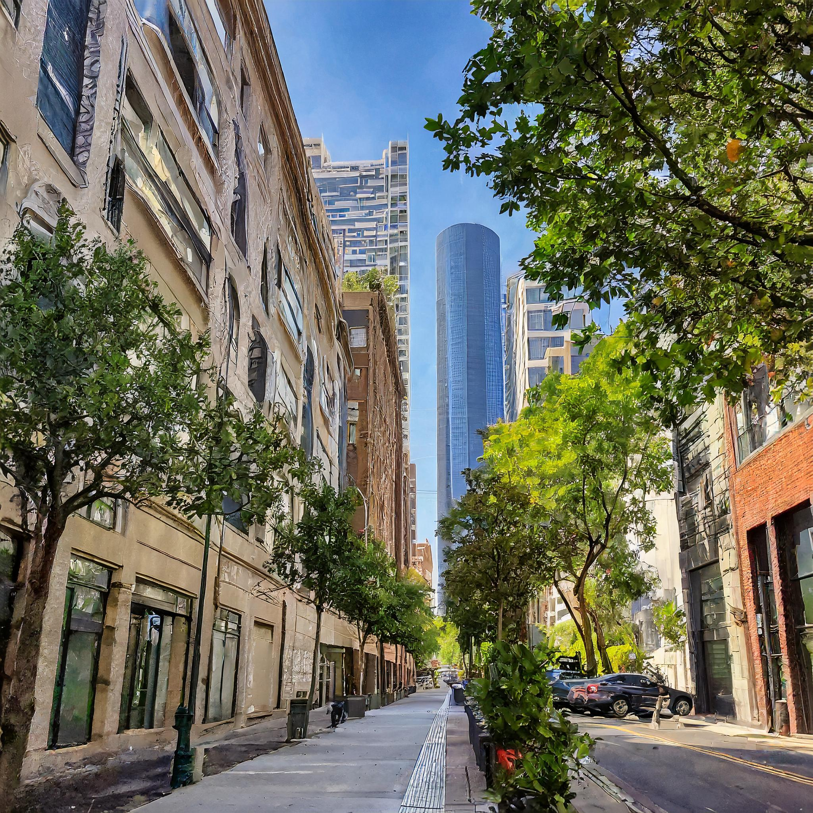

<!DOCTYPE html>
<html lang="en">
<head>
    <meta charset="UTF-8">
    <meta name="viewport" content="width=device-width, initial-scale=1.0">
    <title>Buzzy Stride Routes Map</title>
    <link rel="icon" href="Icons/Logo.png">
    <!-- Linking Leaflet Styles-->
    <link rel="stylesheet" href="https://unpkg.com/leaflet@1.9.4/dist/leaflet.css" integrity="sha256-p4NxAoJBhIIN+hmNHrzRCf9tD/miZyoHS5obTRR9BMY=" crossorigin="" /> 
    <!-- Linking Leaflet Routing Machine Styles-->
    <link rel="stylesheet" href="https://cdnjs.cloudflare.com/ajax/libs/leaflet-routing-machine/3.2.12/leaflet-routing-machine.min.css" />
    <link rel="stylesheet" href="styles.css">

</head>

<body>
    <div id="map"></div>

    <!-- Linking Leaflet -->
    <script src="https://unpkg.com/leaflet@1.9.4/dist/leaflet.js" integrity="sha256-20nQCchB9co0qIjJZRGuk2/Z9VM+kNiyxNV1lvTlZBo=" crossorigin=""></script>

    <!-- Linking Leaflet Routing Machine -->
    <script src="https://cdnjs.cloudflare.com/ajax/libs/leaflet-routing-machine/3.2.12/leaflet-routing-machine.min.js"></script>
    <script>
        // initializing map
        const map = L.map('map'); 
        
        // displaying instructions/welcome before entering in
        alert("Welcome to Buzzy Stride! Tap OK or Close to see your nearby routes.");
        
        // coordinates and zoom level 
        map.setView([51.505, -0.09], 13); 
    
        
        // Open Street Map https://www.openstreetmap.org/#map=5/56.204/6.548  & https://leafletjs.com/
        L.tileLayer('https://tile.openstreetmap.org/{z}/{x}/{y}.png', {
            maxZoom: 19,
            attribution: '© OpenStreetMap'
        }).addTo(map); 

    

        // STARTING CODE WHERE I FOLLOWED https://www.youtube.com/watch?v=NyjMmNCtKf4&list=LL&index=3
        // map element variables
        let marker, circle, zoomed;
        let bkMarker, farmMarker, busyBeeMarker;
        let routeControl; // Variable to store the route control
        
        // tracking if markers have been created
        let markersCreated = false;
    
        // called when geolocation is found
        navigator.geolocation.watchPosition(success, error);
    
        function success(pos) {
            // Check if markers have already been created
            if (markersCreated) {
                return;
            }
    
            // latitude, longitude, and accuracy from found geolocation
            const lat = pos.coords.latitude;
            const lng = pos.coords.longitude;
            const accuracy = pos.coords.accuracy;
    
            // removes any existing marker and circle (new ones about to be set)
            if (marker) {
                map.removeLayer(marker);
                map.removeLayer(circle);
            }
    
            // user location icon
            const userIcon = L.icon({
                iconUrl: 'Icons/navigation.png',
                iconSize: [24, 24],
                // shadowSize: [30,30],
                // shadowUrl: 'Icons/navigation.png'
            });
    
            // marker to the map and a circle for accuracy
            marker = L.marker([lat, lng], { icon: userIcon }).addTo(map);
            circle = L.circle([lat, lng], { radius: accuracy * 2 }).addTo(map);
    
            // zoom in boundaries
            if (!zoomed) {
                zoomed = map.fitBounds(circle.getBounds());
            }
    
            // focus on user's current position
            map.setView([lat, lng]);
    

            // ENDING CODE WHERE I FOLLOWED https://www.youtube.com/watch?v=NyjMmNCtKf4&list=LL&index=3

            
            // bee's knees marker route
            bkMarker = L.marker(getRandomCoordinatesAroundUser(lat, lng, 1.3)).addTo(map); // 1.3 to space marker away from user

           
    
            // popup content for bk route marker
            const bkPopupContent = `
                <div class="popup-content">
                    
                    <p> <b>The Bee's Knees Park Route </b> </p>
                    <p> This lovely 2 mile walk will take you through a relaxing stroll through a wooded park. </p>
                    <button class="navigate-button" onclick="navigateToRoute('bk')">Navigate</button>
                </div>
            `;

            bkMarker.bindPopup(bkPopupContent); //binding first popup to bk marker


            // farm marker route
            farmMarker = L.marker(getRandomCoordinatesAroundUser(lat, lng, 1.3)).addTo(map);  // 1.3 to space the marker away from user

            
            // popup content for farm route marker
            const farmPopupContent = `
                <div class="popup-content">
                    
                    <p> <b> The Farm Route </b> </p>
                    <p> This 3 mile walk will take you on a journey through a bee farm in the country! </p>
                    <button class="navigate-button" onclick="navigateToRoute('farm')">Navigate</button>
                </div>
            `;
            farmMarker.bindPopup(farmPopupContent);
    


            // busy bee route
            busyBeeMarker = L.marker(getRandomCoordinatesAroundUser(lat, lng, 1.3)).addTo(map);  // 1.3 to space out the marker away from user

            const busyBeePopupContent = `
                <div class="popup-content">
                    
                    <p> <b> The Busy Bee Route </b> </p>
                    <p> This lovely 5 mile will show you all of the urban sites a bee might see on their journey for honey! </p>
                    <button class="navigate-button" onclick="navigateToRoute('busyBee')">Navigate</button>
                </div>
            `;
            busyBeeMarker.bindPopup(busyBeePopupContent);
    
            markersCreated = true; // Markers have been created
        }
    
        function error(err) {   // if the user clicks "don't allow"
            if (err.code === 1) {
                alert("Please allow geolocation access");
            } else {
                alert("Cannot get current location");
            }
        }
    
        // navigate to specific route when a marker's "navigate" is clicked
        function navigateToRoute(route) {
            let routeMarkerLatLng;
            switch(route) { // switch statement to see which marker is currently being used
                case 'bk':
                    routeMarkerLatLng = bkMarker.getLatLng();
                    break;
                case 'farm':
                    routeMarkerLatLng = farmMarker.getLatLng();
                    break;
                case 'busyBee':
                    routeMarkerLatLng = busyBeeMarker.getLatLng();
                    break;
            }
            const userLatLng = marker.getLatLng();
            displayRoute(userLatLng, routeMarkerLatLng);
            // alert("Navigating to the route...")
            showEndRouteButton();  // adding button that allows users to end the route (removes route from view)
        }


        // displaying the route from navigateToRoute function 
        function displayRoute(startLatLng, endLatLng) {
            
            // closing the popups once a route is selected by pressing "navigate" button
            if (bkMarker.isPopupOpen()) {
                bkMarker.closePopup();
            }

            if (busyBeeMarker.isPopupOpen()) {
                busyBeeMarker.closePopup();
            }

            if (farmMarker.isPopupOpen()) {
                farmMarker.closePopup();
            }
            // remove existing route if any
            if (routeControl) {
                map.removeControl(routeControl);
            }
            // calculate and display route
            routeControl = L.Routing.control({
                waypoints: [
                    L.latLng(startLatLng.lat, startLatLng.lng),
                    L.latLng(endLatLng.lat, endLatLng.lng)
                ],
                draggableWaypoints: false, // not allowing user to drag waypoints
                addWaypoints: false, // not allowing user to add anymore waypoints by tapping

                lineOptions: {
                    styles: [{ color: '#EF820D', opacity: 1, weight: 4 }]
                }
                
            }).addTo(map);
        }

        function endRoute() {
            // remove existing route if any
            if (routeControl) {
                map.removeControl(routeControl);
            }
            
            const endRouteButton = document.querySelector('.endRouteButton');
            
            if (endRouteButton) {
                endRouteButton.remove();
            }
        }

        // button that when clicked removes the activated route from map 
        function showEndRouteButton(){
            const endRouteButton = document.createElement('button');
            endRouteButton.textContent = 'End Route';
            endRouteButton.classList.add('endRouteButton'); // styling
            endRouteButton.onclick = endRoute; // linking to endRoute function that removes the route if clicked
            map.getContainer().appendChild(endRouteButton); //making sure it shows up on the map
            
            // removing end route button if it is clicked on, this way it can only show up if the user presses "navigate" on each route
            map.getContainer().addEventListener('click', function(event) {
        if (event.target.classList.contains('endRouteButton')) {
            endRouteButton.remove(); 
        }
    });
}

        // generating random coordinates based off of user's geolocation
        // https://stackoverflow.com/questions/7477003/calculating-new-longitude-latitude-from-old-n-meters and ChatGPT (https://chat.openai.com/) helped a lot
        function getRandomCoordinatesAroundUser(lat, lng, radius) {
            const latOffset = (Math.random() - 0.5) * (radius / 111.32); // 1 degree of latitude is approximately 111.32 km
            const lngOffset = (Math.random() - 0.5) * (radius / (111.32 * Math.cos(lat * Math.PI / 180))); // 1 degree of longitude varies depending on the latitude

            const newLat = lat + latOffset;
            const newLng = lng + lngOffset;

            return [newLat, newLng];
        }
    </script>
</body>
</html>


<!-- This Technical_Prototype_ID_TRM2_2024 is made available under the Open Database License: http://opendatacommons.org/licenses/odbl/1.0/. Any rights in individual contents of the database are licensed under the Database Contents License: http://opendatacommons.org/licenses/dbcl/1.0/ -->